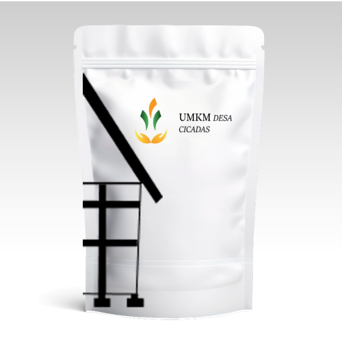

Ujang Herlan
0858-4653-7024
Produk UMKM
Gula semut adalah produk olahan dari nira kelapa yang diolah secara tradisional. Bentuknya seperti butiran halus mirip semut, sehingga disebut gula semut. Proses pembuatannya memerlukan ketelatenan, yaitu dengan memanaskan nira kelapa hingga mengkristal dan menjadi butiran gula. Keunggulan gula semut dari Desa Cicadas memiliki rasa yang manis alami serta kandungan gizinya yang tinggi. Gula semut kaya akan Thiamin (Vitamin B1) Berfungsi sebagai koenzim dalam metabolisme energi, Riboflavin (Vitamin B2) Membantu membentuk sel darah merah, dan Pyridoksin (vitamin B6) Metabolisme Protein dan Karbohidrat yang bermanfaat buat tubuh. Selain itu, gula semut juga memiliki indeks glikemik yang lebih rendah dibandingkan gula pasir biasa, jadi lebih aman dikonsumsi oleh mereka yang menjaga kadar gula darah.
Dari segi rasa, gula semut memiliki cita rasa yang khas dengan aroma karamel sehingga cocok digunakan sebagai pemanis alami untuk berbagai jenis makanan dan minuman, mulai dari teh, kue, hingga masakan tradisional. Jadi, selain lebih sehat, gula semut juga bisa bikin makanan dan minuman jadi lebih enak dan spesial.
